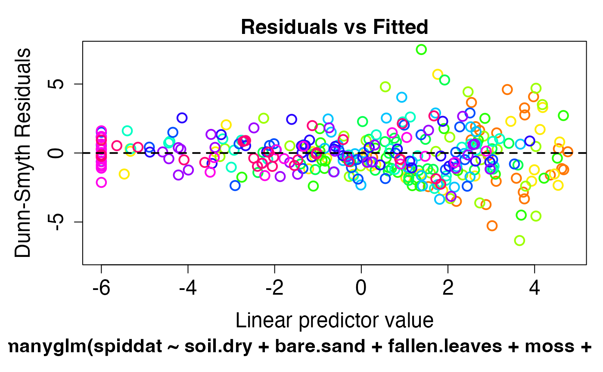
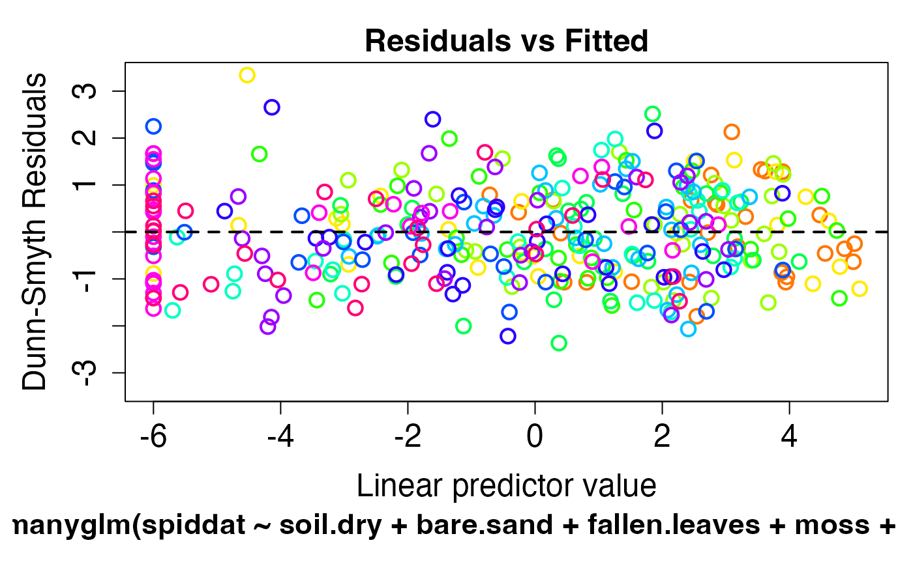
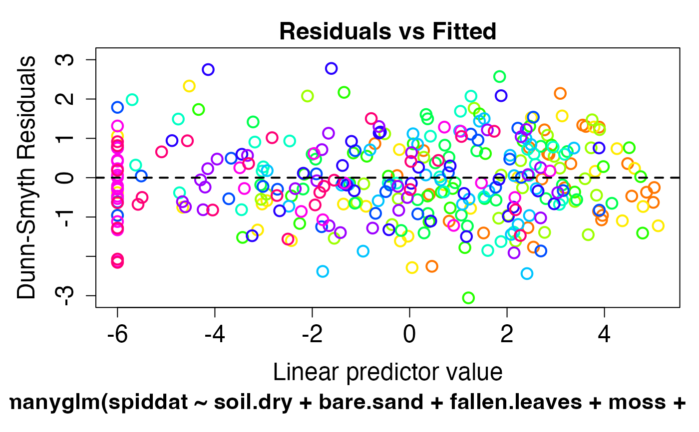

plot.manylm.RdFour plots (selectable by which) are currently available: a plot
of residuals against fitted values, a Normal Q-Q plot,
a Scale-Location plot of \(\sqrt{| residuals |}\) against fitted values,
a plot of Cook's distances versus row labels.
By default, all of them are provided.
The function is not yet available for manyglm object
# S3 method for manylm
plot(
x, res.type="pearson", which=1:4, caption=c("Residuals vs Fitted", "Normal Q-Q",
"Scale-Location", "Cook's distance"), overlay=TRUE,
n.vars=Inf, var.subset=NULL, sub.caption=NULL, studentized= TRUE, ...)
# S3 method for manyglm
plot(
x, res.type="pit.norm", which=1, caption=c("Residuals vs Fitted", "Normal Q-Q",
"Scale-Location", "Cook's distance"), overlay=TRUE,
n.vars=Inf, var.subset=NULL, sub.caption=NULL, ...)manylm object or manyglm object, typically the
result of a call to manylm or manyglm.
type of residuals to plot. By default, res.type="pit-norm" uses Dunn-Smyth
residuals (Dunn & Smyth 2996), related to the probability integral transform, for manyglm.
These residuals are especially recommended for presence-absence data or discrete data.
if a subset of the plots is required, specify a subset of
the numbers 1:4.
captions to appear above the plots
logical, whether or not the different variables should be overlaid on a single plot.
the number of variables to include in the plot.
the variables to include in the plot.
common title---above figures if there are multiple;
used as sub (s.title) otherwise. If NULL,
as by default, a possible shortened version of
deparse(x$call) is used.
other parameters to be passed through to plotting functions.
logical indicating whether studentized or standardized residuals should be used for plot 2 and 3.
plot.manylm is used to check the linear model assumptions that are made
when fitting a model via manylm. Similarly, plot.manyglm checks
the generalised linear model assumptions made when using manyglm.
As in Wang et al (2012), you should check the residual vs fits plot for no pattern
(hence no suggestion of failure of key linearity and mean-variance assumptions).
For manylm fits of small datasets, it is desirable that residuals on the normal Q-Q plot be close
to a straight line, although in practice the most important thing is to make
sure there are no big outliers and no suggestion of strong skew in the data.
The recommended res.type option for manyglm calls, "pit-norm", uses randomised quantile or "Dunn-Smyth"
residuals (Dunn & Smyth 1996). Note that for discrete data, these residuals
involve random number generation, and will not return identical results on replicate runs - so it is recommended
that you plot your data a few times to check if any pattern shows up consistently across replicate plots.
The other main residual option is "pearson", Pearson residuals. Note that all res.type options
are equivalent for manylm.
Some technical details on usage of this function: sub.caption - by default the function call - is shown as
a subtitle (under the x-axis title) on each plot when plots are on
separate pages, or as a subtitle in the outer margin (if any) when
there are multiple plots per page.
The ‘Scale-Location’ plot, also called ‘Spread-Location’ or ‘S-L’ plot, takes the square root of the absolute residuals in order to diminish skewness (\(\sqrt{| E |}\) is much less skewed than \(| E |\) for Gaussian zero-mean \(E\)).
If studentized=FALSE the ‘S-L’, the Q-Q, and the Residual-Leverage
plot, use standardized residuals which have identical variance
(under the hypothesis) otherwise studentized residuals are used.
Unlike other plotting functions plot.manylm and plot.manyglm
respectively do not have a subset argument, the subset needs to be specified
in the manylm or respectively manyglm function.
For all arguments that are formally located after the position of ...,
positional matching does not work.
For restrictions on filename see R's help on eps/pdf/jpeg.
Note that keep.window will be ignored if write.plot is
not show.
Dunn, P.K., & Smyth, G.K. (1996). Randomized quantile residuals. Journal of Computational and Graphical Statistics 5, 236-244.
Wang Y., Naumann U., Wright S.T. & Warton D.I. (2012). mvabund - an R package for model-based analysis of multivariate abundance data. Methods in Ecology and Evolution 3, 471-474.
require(graphics)
data(spider)
spiddat <- mvabund(spider$abund)
## plot the diagnostics for the linear fit of the spider data
spidlm <- manylm(spiddat~., data=spider$x)
plot(spidlm,which=1:2,col.main="red",cex=3,overlay=FALSE)
plot(spidlm,which=1:4,col.main="red",cex=3,overlay=TRUE)
## plot the diagnostics for Poisson and negative binomial regression of the spider data
glmP.spid <- manyglm(spiddat~., family="poisson", data=spider$x)
plot(glmP.spid, which=1) #note the marked fan-shape on the plot

glmNB.spid <- manyglm(spiddat~., data=spider$x, family="negative.binomial")
plot(glmNB.spid, which=1) #no fan-shape

plot(glmNB.spid, which=1) #note the residuals change on re-plotting, but no consistent trend
